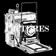
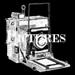
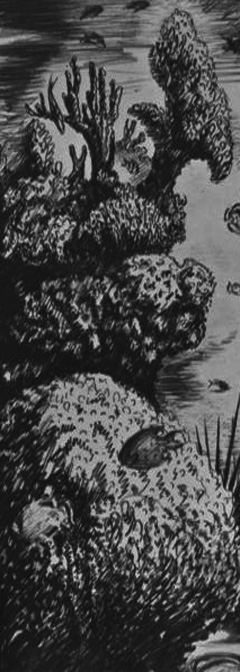
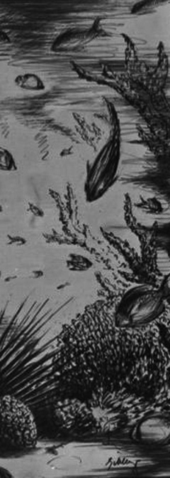

|  |
The Dyeing Merchants pride themselves on having a lo-fi, DIY ethic. They value texture and arrange pieces organically; letting them ebb and flow. Striking guitar and synth features bloom in the midst of otherwise traditional verse-chorus-verse structures. The band's sonic imagery suggests a trip across a vast ocean with ups and downs, with solid drumming leading the charge. Their sound has been compared to Black Heart Procession, Sonic Youth and WOMEN. The Dyeing Merchants have played shows across Canada including Vancouver’s Biltmore Cabaret and Rickshaw Theatre, opening for such groups asopening for such groups as Duffy and the Doubters, Slam Dunk, Bankrobber, Acres of Lions, Kathryn Calder and Mount Eerie. Both their 2011 Self Titled album and 2012’s Tempest Roar were recorded, guerrilla-style, at the famous fifty-fifty arts collective in Victoria, BC. Tempest Roar was mastered by Noise Floor studio in Ladysmith. Frontman Jzero Schuurman is a fixture in the Canadian music scene, having played drums for various bands, most notably Jane Vain and the Dark Matter who were signed to Canada's Rectangle Records. Jzero currently plays guitar, keys and baritone bass for various bands including his solo project Psychic Pollution. Members Renee Crawford, Robert Coslett and Ramona Struthers come from such bands as: Diamonds, Higher Arc, Lucid 44, Grandfather Fire and the Holy Morning, Horse Girls , Balacade and Le Rat. |
 |